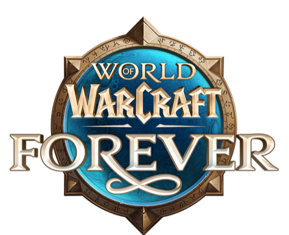
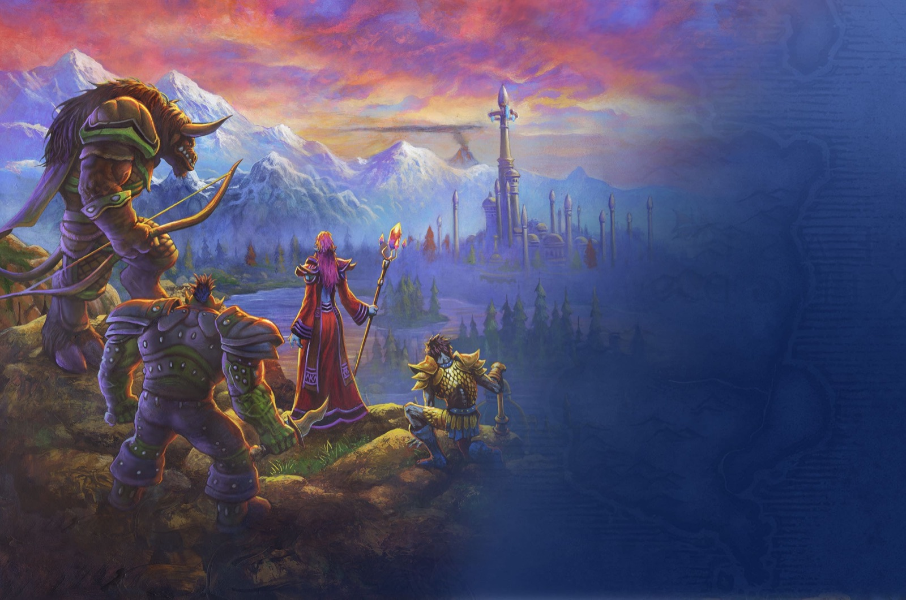
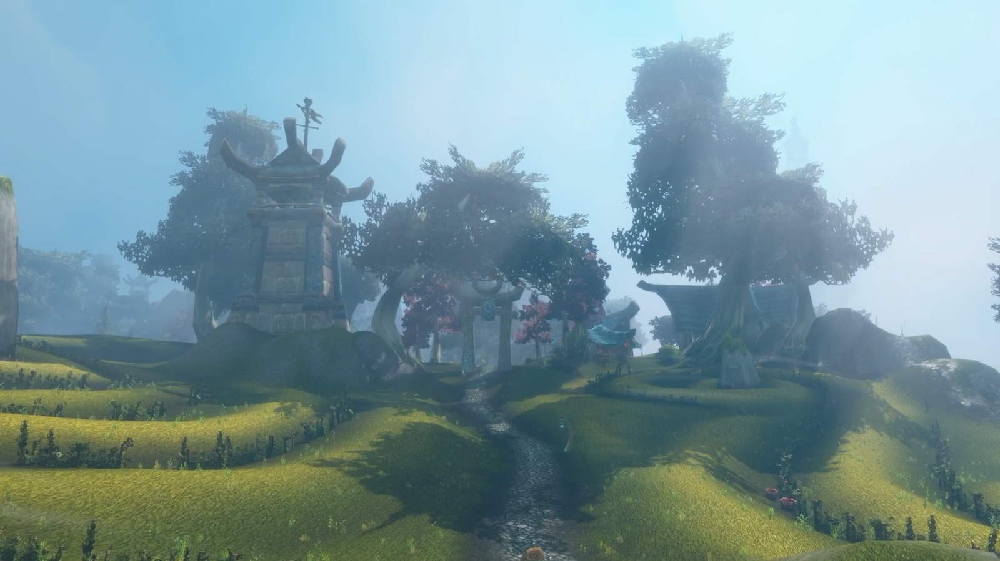
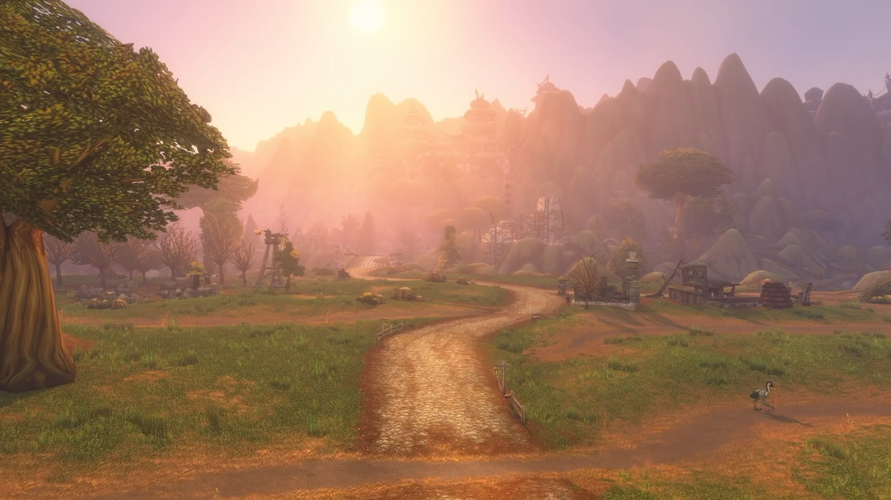
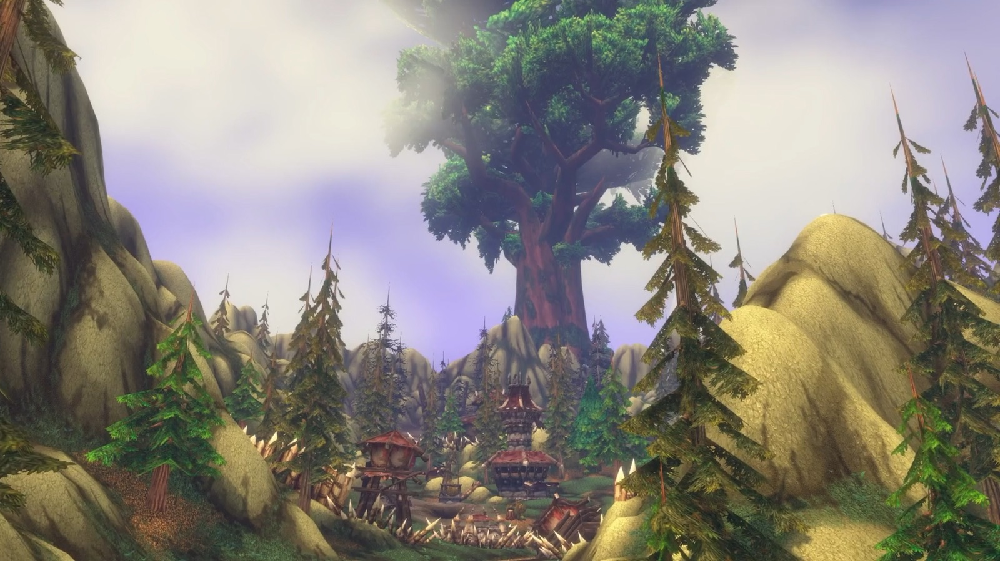
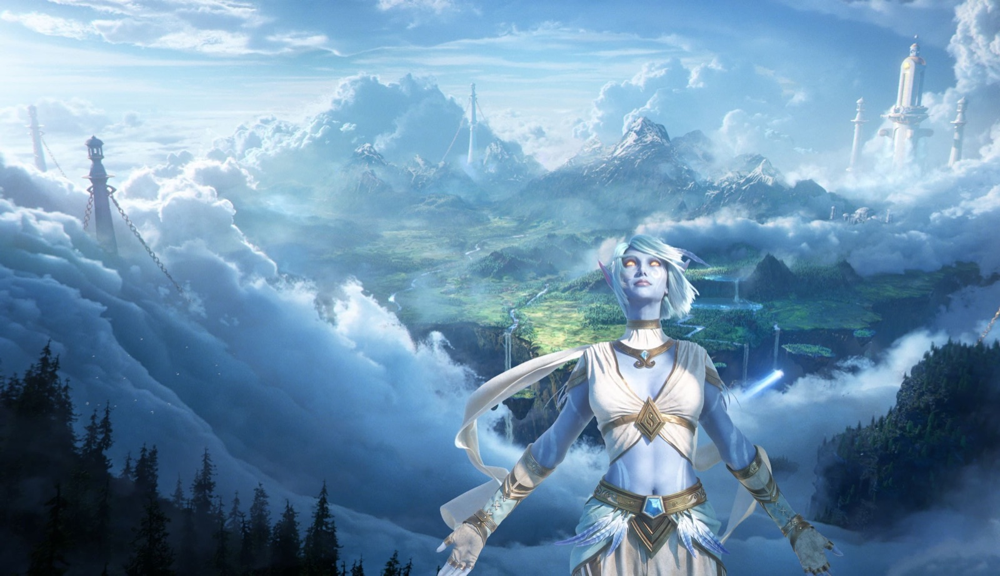
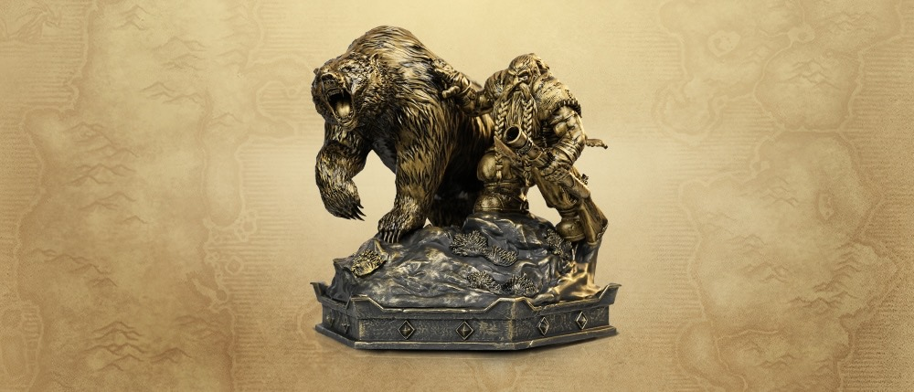

Officially announced at BlizzCon 2026World of Warcraft: Forever, everything announced at BlizzCon 2026
Classic+ is real, it is called World of Warcraft: Forever, and it launches on November 4, 2026. Here is the full picture: dates, the Skyborne race, new zones, dungeons and raids, class and racial changes, the Legacy system, editions and the roadmap through summer 2027.

What is World of Warcraft: Forever?
World of Warcraft: Forever is the Classic+ the community has asked for since 2019. It was revealed at the end of the BlizzCon 2026 Opening Ceremony on September 12 with a new cinematic starring the Dwarf Hunter and his bear from the original WoW trailer. The trailer moves past Khaz Modan to Dalaran, freed from its dome, an Undead Paladin wielding the Light, and Archimonde's bones on the slopes of Mount Hyjal.
Blizzard calls it "a world that never ends." Forever lives alongside modern World of Warcraft and WoW Classic, with Azeroth itself as the main character. The story is set in the first year of original WoW, after the events of Warcraft III and before Molten Core. Characters level to 60 and stay there: progress is never invalidated by an expansion, and new patches add stories, dungeons, raids and systems at level 60 and throughout the 1 to 60 journey.
How Classic+ became Forever
In the What's Next panel, Senior Game Director Ion Hazzikostas explained the history. When Classic launched, many players wanted to move on to TBC and beyond, which is what happened, but others simply wanted to stay in that original world. The team of 2020 did not have the capacity to build new content for it, so the idea grew slowly and turned into Season of Discovery: an experiment to find out how much change the Classic experience could take. By mid-2024 the team was convinced a permanent version was both possible and compelling, and the loudest feedback was that players wanted a forever home instead of a temporary season.
The design rules
Lead Classic Designer Tim Jones laid out what Forever will and will not be:
What stays true to Classic
- Measured against the spirit of the original game
- No flying mounts
- No level scaling
- A dangerous world where preparation and teamwork matter, without difficulty for its own sake
- Leveling matters as much as the endgame
What is new
- New and unfinished stories across all levels: Blizzard name-checked Gilneas, Mount Hyjal, Uldum, the Emerald Dream and "what lies beyond Un'Goro"
- Patches for every playstyle: PvE, PvP, dungeons and raids
- No expansions that wipe out your progress; the catch-up system is "play the game"
- "Nothing is off the table, not even new classes"
Release date, beta and every key date
World of Warcraft: Forever launches globally on Wednesday November 4, 2026 at 3:00 p.m. PST. That is 23:00 UTC, or 00:00 CET on Thursday November 5 in most of Europe. All dates below are Blizzard's (PST unless noted).
| Date | What happens |
|---|---|
| September 12, 2026 | World of Warcraft: Forever announced at BlizzCon. Pre-purchase opens. Warcraft III Reforged: Forsaken Kingdom releases. |
| September 17, 2026 | Beta starts for Skyborne Epic Pack, Warcraft Forever Collection and Collector's Edition owners (plus beta opt-ins). The roadmap slide lists the beta as playable up to level 30. |
| October 20, 2026 | Invite-A-Friend launch codes start arriving by email. |
| October 21, 2026 | Beta ends (the roadmap slide shows October 22). |
| October 27 to November 3 | Early Name Reservation: create and customize up to 3 characters with any upgrade edition. Names are first come, first served. |
| November 4, 2026 | Global launch at 3:00 p.m. PST. 30 days of Game Time from the Epic Pack and Collection are added. |
| November 4 to 11, 2026 | Launch week: invited friends play without a subscription. |
| December 9, 2026 | Raids unlock: Barrow Deeps (10), Hyjal Summit (20) and Onyxia's Lair (40). |
| January 11, 2027 | Last day to buy the limited Warcraft Forever Collection. |
| December 31, 2027 | Deadline to redeem a Collector's Edition code for a possible Battle.net Balance credit on earlier digital purchases. |
The WoW Forever roadmap, 2026 to 2027
Blizzard showed a year-one roadmap and summed it up as "fast-paced production for a slow-paced game." Content and timing are subject to change, and Blizzard says features will evolve with player feedback.
Beta and launch
- Beta: September 17 to October 21/22, up to level 30
- October 27: Early Name Reservation and character creation
- November 4: launch
Raids unlock, December 9
- Barrow Deeps (10 player)
- Hyjal Summit (20 player)
- Onyxia's Lair (40 player)
Major update
- 2 new raids (10 and 20 player)
- 2 new dungeons
- New quests and a new playable area
- New legendary questline
- PvP season refresh
Major update
- A revamped iconic raid
- A new raid
- Expanded world content
- 2 new dungeons
- PvP season refresh
- Professions and Legacy updates
New content launches in sequence with the original game's content, so raid sizes are mixed from the start: the 20 player Hyjal Summit opens together with the 40 player Onyxia's Lair.
New and reimagined zones
Your adventure spans the Eastern Kingdoms and Kalimdor, with new and reimagined regions, unfinished corners of the original world and more than a thousand new quests woven through the level 1 to 60 journey. Four regions were introduced at BlizzCon.

Zephras Isle
Levels 1 to 12- Starting zone of the Skyborne race
- A once-secluded island oasis in the sky, now facing an existential threat
- Classic Warcraft aesthetics with architecture inspired by Skywall
- Requires the Skyborne Heroic Pack or higher

The Riverglades
About levels 30 to 45- A new Eastern Kingdoms frontier of rivers, grasslands, trade routes and ruined keeps
- 150+ new quests, new reputations and rewards
- Humans, orcs, ogres and struggling communities with old grudges: "not a story about saving Azeroth, a story about living there"
- A neutral goblin port with expanded travel routes
- Its own new dungeon, so you do not have to run Scarlet Monastery a few hundred more times

Mount Hyjal
Endgame leveling zone- What happened after Archimonde's defeat, including Darkwhisper Gorge
- Solo and group content, new reputations, quests and rewards
- Home of the Hyjal Summit raid and one of three entrances to the Barrow Deeps
- Help shape the future of a recovering land
Shen'dralas
New region- A long-hidden mystery between Mulgore and Desolace
- Tied to the Shen'dralar, the Night Elves still in Dire Maul, and Eldre'Thalas
- The war between the region's centaur tribes
- New reasons to visit Maraudon and Razorfen Downs
Azeroth in a new light
Associate Production Director Clay Stone stressed that the Classic art style is timeless and is not being replaced. Instead, existing effects are enhanced: rolling rivers, more natural fog, moonlight breaking through the trees and upgraded environments. Blizzard's showcase covered Ashenvale, Darkshore, Dustwallow Marsh, Felwood, Mulgore and The Barrens. Original zones are also expanded with new quests and secrets.
9 new dungeons and new raids
Lead Software Engineer Nora Mills presented nine new dungeons and two new launch raids.
| Dungeon | Levels | Details |
|---|---|---|
| Hall of Thanes | 13 to 18 | The Hall has been breached and the Alliance must protect its ancient treasures, though Horde players may want some for themselves. |
| Lordaeron | 15 to 20 | The capital lies in ruins with Scourge still inside. The Horde fights to reclaim it, and the Alliance may find a way in too. |
| Dalaran | 20 to 35 | The city's barrier from after Warcraft III is gone, but the Kirin Tor do not have the situation under control. A city dungeon. |
| Excavation Site | Not announced | An Explorers' League dig in the Wetlands. |
| The Drowned City | Not announced | An ancient troll ruin off the coast of Stranglethorn Vale. Playable on the BlizzCon show floor. |
| Alcaz Island Prison | 40 to 60 | High-level dungeon. |
| The Shaper's Terrace | 40 to 60 | High-level dungeon. |
| Krol'Dok Stronghold | 40 to 60 | High-level dungeon. |
| Blackmaw Hold | 40 to 60 | A great furbolg city. |
Barrow Deeps
10 player raid · December 9- The first 10 player raid
- Three entrances across the world, one on Mount Hyjal
- Where the Night Elves hold dangerous prisoners, including "one particularly infamous character we probably aren't prepared to deal with yet"
Hyjal Summit
20 player raid · December 9- The summit is being drained of its power
- Opens together with Onyxia's Lair
Onyxia's Lair
40 player raid · December 9- The original raid, unlocking with the two new ones
On top of that: new legendary quests, new tier sets and hundreds of new items, many with special on-use effects. Existing items have also been tuned to be "a little stronger, a little more unique and a little more useful."
The Skyborne: WoW Forever's new race

The Skyborne are a new race of windswept, elemental elves. Their once-secluded floating home, Zephras Isle, faces an existential threat, and their shared ancestry has led to very different visions for the future. The Skyborne are not neutral: at character creation you choose a faction, and that choice decides your extra class.
High Order Skyborne (Alliance)
- Pursue the arcane legacy of their ancestors and the ideas of the Kirin Tor
- Classes: Warrior, Hunter, Rogue, Druid and Mage
- Racials: Walk on Air, Read Ley Line, Wind Blessed, Elemental Insight
Windshaper Skyborne (Horde)
- Embrace elemental traditions and ride the elemental winds
- Classes: Warrior, Hunter, Rogue, Druid and Shaman
- Racials: Walk on Air, Skysight, Wind Blessed, Elemental Insight
Druid forms and customization
Skyborne Druids get their own sky-blue Bear, Cat, Travel and Moonkin forms, shown on stage at BlizzCon. No Tree form has been shown. Character customization is deep, with many skin tones, hairstyles, eye colors and markings, so not every Skyborne has to be blue.
How to unlock the Skyborne
The Skyborne and the Zephras Isle starting experience require the Skyborne Heroic Pack (29.99 US dollars / 29.99 euros) or a higher edition. It is the first time Blizzard has put a playable race behind a purchase outside of an expansion. The access applies only to the WoW account the pack was bought for.
Classes, talents and new race and class combinations
Every class and specialization is being revamped, with new skills and new talent trees. The Classic principle of making each class feel unique stays, but talents move away from small +1% and +2% bonuses towards impactful choices.
Confirmed class changes
- Paladin: a new tanking Seal, more group healing and a whole new suite of Retribution tools
- All classes: revamped specializations and talent trees
- Talent points: 51 in total, as in Classic (see the Talented Legacy perk)
New race and class combinations
- Undead Paladin (Horde), tied to the first Forsaken Paladin in Warcraft III Reforged: Forsaken Kingdom
- Dwarf Shaman (Alliance)
- Skyborne Warrior, Hunter, Rogue and Druid, plus Mage (Alliance) or Shaman (Horde)
Blizzard's official copy names the Forsaken Paladin and Dwarf Shaman. Class lists transcribed from show-floor footage also show Human Hunter, Gnome Priest, Orc Mage and Troll Warlock as new options. Treat those four as unconfirmed until the beta is live.
WoW Forever racials: every race, compared to Classic
Racials were redesigned to feel more unique. From the BlizzCon footage: every race now has four racials, all resistance racials are gone, weapon specializations now add critical strike chance instead of weapon skill, and several races gained new active abilities. Values are as shown at level 60 and may change during the beta.
New new in Forever Changed changed from Classic Same same as Classic
Alliance
Human
Hunter (new), Mage, Paladin, Priest, Rogue, Warlock, Warrior
- Will to SurviveNew Removes all Stun effects.
- PerceptionSame Greatly increases stealth detection for 20 sec.
- Sword SpecializationChanged Swords increase spell and ability critical strike chance by 2% (was +5 sword skill).
- The Human SpiritSame Spirit increased by 5%.
Removed: Diplomacy, Mace Specialization.
Dwarf
Hunter, Paladin, Priest, Rogue, Shaman (new), Warrior
- Find TreasureChanged Sense nearby treasure on the minimap.
- StoneformChanged Removes all Poison and Disease effects and reduces Physical damage taken for 8 sec (was immunity plus 10% armor).
- Mace SpecializationNew Maces increase spell and ability critical strike chance by 1%.
- Big Game HunterNew Damage to Beasts increased by 5%.
Removed: Frost Resistance, Gun Specialization.
Night Elf
Druid, Hunter, Priest, Rogue, Warrior
- Elune's LightNew Increases critical strike chance by 10% for 15 sec.
- ShadowmeldChanged Slip into the shadows; threat is restored against enemies still in combat when it ends.
- QuicknessChanged 1% dodge chance and 2% run speed (was dodge only).
- Wisp SpiritChanged 75% speed as a wisp while dead (was 50%).
Removed: Nature Resistance.
Gnome
Mage, Priest (new), Rogue, Warlock, Warrior
- Eureka!New Your next 3 spells or abilities cost less and deal or heal 10% more.
- Expansive MindChanged Maximum Mana, Rage or Energy increased by 5% (was 5% Intellect).
- Engineering SpecializationChanged Engineering devices are more reliable (was +15 skill).
- Escape ArtistSame Escape any immobilize or movement slow.
Removed: Arcane Resistance.
High Order Skyborne
Druid, Hunter, Mage, Rogue, Warrior
- Walk on AirNew Glide downward through the air for 10 sec.
- Read Ley LineNew Activate a ley line for 100% increased Health and Mana regeneration.
- Wind BlessedNew 1% increased melee, ranged and spellcasting Haste.
- Elemental InsightNew Damage to Elementals increased by 5%.
Horde
Orc
Hunter, Mage (new), Rogue, Shaman, Warlock, Warrior
- Blood FuryChanged Attack Power and Spell Power +10% for 15 sec, without the old healing penalty.
- Shatter CurseNew Immunity to Curses and Banes and reduced Magical damage taken for 8 sec.
- Axe SpecializationChanged Axes increase spell and ability critical strike chance by 1%.
- HardinessChanged Stun durations reduced by 20% (was a resist chance).
Removed: Command (pet damage).
Undead (Forsaken)
Mage, Paladin (new), Priest, Rogue, Warlock, Warrior
- Will of the ForsakenChanged Removes any Charm, Fear or Sleep effect.
- CannibalizeChanged Regenerates 35% of total Health and Mana over 10 sec (was health only).
- Underwater BreathingSame Breath lasts 300% longer.
- Touch of the GraveNew 5% chance on hit to drain Health, up to 5% of your maximum Health.
Removed: Shadow Resistance.
Tauren
Druid, Hunter, Shaman, Warrior
- War StompSame Stuns up to 5 enemies within 8 yards for 2 sec.
- CultivationChanged Grow bonus herbs that do not require Herbalism to gather (was +15 Herbalism).
- PlainsrunningNew Movement speed increases the longer you keep moving.
- EnduranceChanged Total Health +5% and Hit chance +1%.
Removed: Nature Resistance.
Troll
Hunter, Mage, Priest, Rogue, Shaman, Warlock (new), Warrior
- BerserkingChanged Attack and casting speed +10% for 10 sec (no more low-health scaling).
- Rapid RegenerationNew Regenerates 50% of maximum Health over a short duration.
- RegenerationSame Health regeneration +10%, 10% continues in combat.
- Beast SlayingSame Damage against Beasts +5%.
Removed: Bow Specialization, Throwing Specialization.
Windshaper Skyborne
Druid, Hunter, Rogue, Shaman, Warrior
- Walk on AirNew Glide downward through the air for 10 sec.
- SkysightNew Receive an Elemental Blessing that increases run speed by 10%.
- Wind BlessedNew 1% increased melee, ranged and spellcasting Haste.
- Elemental InsightNew Damage to Elementals increased by 5%.
Racial values and the extra race and class combinations were transcribed from BlizzCon 2026 show-floor footage; Wowhead independently confirmed the Skyborne racials and the Tauren, Orc and Gnome changes. Expect tuning during the beta.
New systems: transmog, graphics, Camping, names and more
Optional transmog
- Transmog exists, but it is opt-in per player
- Turn it on to see your own and other players' transmogs
- Turn it off to see everyone's real gear, "clown suits" included
HD or SD graphics
- Original SD or updated HD visuals for characters, models and the world
- Fully toggleable
- Improved lighting, fog, water and environments
Camping
- A new tradeskill-focused system
- Build campsites out in the world that other players can join
- Use your tradeskills to buff each other and communicate
- Camp features are crafted and upgraded; resting at a camp gives benefits
Main and Secondary names
- A full character name made of a Main Name and a Secondary Name
- Both are required, but you choose in settings whether to display the full name
- Reserve names early from October 27 with any upgrade edition
Quality of life
- Riding skill updates (mounts still need riding skill bought in-game)
- Gamepad support
- A new legendary and new tier sets
- Available on Windows and Mac through the Battle.net app
Supply crates
- A Legacy perk references turning in crates to the Azeroth Commerce Authority and Durotar Supply and Logistics for Merchant's Favor
- Those faction supply systems return from Season of Discovery
The Legacy system: account-wide perks for every character
Because the 1 to 60 journey is the heart of Classic, the Legacy system rewards players who level more than one character. You complete Legacy Challenges, achievement-style goals in six categories:
- Exploring
- Leveling classes
- Increasing tradeskills
- Earning PvP ranks
- Maximizing reputations
- Completing dungeons and raids
Each completed challenge awards one Legacy Point. Points are spent in a Legacy tree with three categories, and every perk applies to all characters on the account. Most perks are passive, a few are activated, and none are combat power. The level 38 show-floor character had 4 points to spend, and several nodes are placeholders "to be added in future patch content."
Professions
- Working Overtime: +4% chance per rank to gain skill from any primary, secondary or class tradeskill
- Bountiful Harvest: discover 20% more Scarce materials from Mining, Herbalism and Skinning
- Master Chef: 10% chance for an extra result from cooking
- Performance Bonus: 5% chance for 100% more Merchant's Favor on supply crate turn-ins
- Luremaster: 25% chance for an extra fish while a lure is active
- Dedicated Study: once per 23 hours, +1 skill in your lowest primary or secondary tradeskill; if everything is at 300, gain 2 to 4 random Elemental Essences instead
Adventure
- Well Rested: rested XP accumulates 4% faster and its cap is 4% higher
- Talented: talent points start at level 9 instead of 10, still capped at 51
- High Alert: detect stealth as if one level higher (not in battlegrounds)
- Thrill of Adventure: killing blows on non-trivial enemies restore 1% Health and Mana over 10 sec (open world only)
- Field Guide: 8% shorter cooldown on adding Camp features
- Field Medicine: Recently Bandaged lasts 5 sec less (open world only)
- Frequent Flier: 50% cheaper flight paths and 20% faster flight path mounts
Resourcefulness
- The Quick and the Dead: faster while dead, and helpful spells cost nothing for 1 min after resurrection or until combat
- Reinforce: less durability loss when you die
- Diplomat: +2% reputation gains per rank
- For Great Honor: +2% Honor Points per rank
- Permanence: long-duration group buffs from your class and camp resting benefits last 50% longer
- Gourmand: food buffs last 33% longer
- Reagent Economy: class abilities no longer need vendor reagents, and Tier 1 camp features cost no reagents
Two demo builds were shown and they differ slightly in ranks and numbers (Reinforce appeared as both 6% and 8% less durability loss), so the exact values will move before launch.
Legacy rewards
Separately from the tree, your total number of earned points unlocks a cosmetic reward track, a bit like renown. Spending points on perks does not slow it down. Rewards seen so far: the Replica Ironforge Air Rifle (shoot and stun other players, with a score counter), the Spectral Bear Cub pet, a Spectral Bear tabard and the Reins of the Spectral Bear mount.
Profession perks
Professions get their first real overhaul. In Classic, a profession only gave you its recipes; in Forever, each primary profession also grants perks to the character who learns it, next to new and reworked recipes. The perks shown in the BlizzCon footage:
| Profession | Perks and new features shown |
|---|---|
| Alchemy | Mixology (elixirs and flasks last longer and are stronger), Philosopher's Stone (an upgradable trinket that grows with your skill), new recipes |
| Blacksmithing | Repair All (repair all equipment anywhere), Belt Buckles that add sockets to waist armor, new recipes |
| Enchanting | Ring enchants, shard transmutes to higher grades, stave crafting and more |
| Engineering | Still one of the strongest combat professions, more gadgets, bombs and trinkets, Goblin or Gnomish specialization |
| Herbalism | Natural Talent (increased resistance to all schools of magic), better odds on rare lotus, more herbs per node |
| Leatherworking | Armor kits for leather and mail, increased mounted speed, dragonscale and elemental leather sets |
| Mining | Made of Metal (total health +5%), extra ore from mineral nodes, rare and combat-oriented materials from nodes |
| Skinning | Beasts of the Wild (damage to Beasts and Dragonkin +5%), better odds on rare hides |
| Tailoring | Embroidery with profession-only bonuses on cloth gear, extra cloth from humanoids, new and reworked cloth sets |
Transcribed from BlizzCon 2026 footage; exact numbers are not final. Summer 2027 brings another round of Professions and Legacy updates.
PvP and Hardcore
PvP
- The original battlegrounds return
- The Darkspear Islands: a new strategic 15v15 battleground, similar to Eye of the Storm with Arathi Basin style capture points
- An updated PvP and Honor system
- PvP season refreshes in spring and summer 2027
- PvP ranks count towards Legacy Challenges
Hardcore
- Hardcore is confirmed for World of Warcraft: Forever
- Details are reserved for the World of Warcraft Hardcore: What's Next panel on September 13, 2026
Editions, price and what is included
The game itself costs nothing extra on top of a World of Warcraft subscription or Game Time. The three digital upgrade editions are on the Battle.net Shop now: the Skyborne Heroic Pack for €29.99, the Skyborne Epic Pack for €59.99 and the Warcraft Forever Collection for €79.99. The physical Collector's Edition costs €150. Items marked * work in both modern WoW and Forever, items marked ** only in Forever, and none of them work in WoW Classic.
| Included | Skyborne Heroic Pack | Skyborne Epic Pack | Warcraft Forever Collection |
|---|---|---|---|
| Price | €29.99 | €59.99 | €79.99 (until Jan 11, 2027) |
| Skyborne race + Zephras Isle starting experience | ✓ | ✓ | ✓ |
| Early Name Reservation (Oct 27 to Nov 3) | ✓ | ✓ | ✓ |
| Cerulean Prideclaw ground mount* | ✓ | ✓ | ✓ |
| Shen'dorei Skyseer's Garb transmog set* | ✓ | ✓ | ✓ |
| Veteran Adventurer's Rucksack back transmog* | ✓ | ✓ | ✓ |
| Shen'dorei Windwell toy* | ✓ | ✓ | ✓ |
| Skyborne housing decor (modern WoW, needs Midnight) | ✓ | ✓ | ✓ |
| Beta access (Sept 17 to Oct 21) | ✕ | ✓ | ✓ |
| 30 days of Game Time (added Nov 4) | ✕ | ✓ | ✓ |
| Veteran Adventurer's Loyal Companion ground mount* | ✕ | ✓ | ✓ |
| Veteran Adventurer's Outdoor Wear transmog set* | ✕ | ✓ | ✓ |
| Zergling, Panda, Diablo and Pachimari pets** | ✕ | ✓ | ✓ |
| Lordaeron and Shen'dorei tabards** | ✕ | ✓ | ✓ |
| Warcraft III: Reforged | ✕ | ✕ | ✓ |
| Warcraft III Reforged: Forsaken Kingdom campaign | ✕ | ✕ | ✓ |
| Forsaken and Human figurine decor (modern WoW housing) | ✕ | ✕ | ✓ |
| Invite-A-Friend launch codes | 1 | 3 | 3 |
The Cerulean Prideclaw is a ground mount, so you still have to buy riding skill in-game. Housing decor can only be used in modern World of Warcraft housing, which requires Midnight.
Invite-A-Friend launch codes
Every edition includes codes you can send to a friend so they can play Forever during launch week, November 4 to 11, 2026, without a subscription or Game Time. Codes arrive by email from October 20, 2026. Copy the code and send it to the friend you want to invite; they redeem it through Battle.net. Gift purchases do not include codes.
The Collector's Edition

The physical World of Warcraft: Forever Collector's Edition costs €150 and is available for pre-purchase from the Blizzard Gear Store (players in Australia and New Zealand buy it through participating retailers). It contains:
- A Warcraft Forever Collection digital code: Skyborne Epic Pack, Warcraft III: Reforged and Warcraft III Reforged: Forsaken Kingdom
- A 13-inch Dwarf and Bear statue
- A Zephras Isle mousepad
- Art prints
- Collectible pins
- A companion journal
Beta access from the Collector's Edition is delivered by email and only valid during the beta period. If you want the digital items sooner, you can buy a digital edition now; some purchases qualify for a Battle.net Balance credit when you redeem the Collector's Edition code by December 31, 2027. Not every product and upgrade path qualifies, so check Blizzard's support article first.
Warcraft III Reforged: Forsaken Kingdom
Forever's story begins in a new Warcraft III campaign. Forsaken Kingdom was announced and released on September 12, 2026. It follows Sylvanas and the fall of Lordaeron, the founding of the Undercity and the first Forsaken Paladin, and it leads straight into the Undead Paladins of Forever.
- More than 30 hours of gameplay, including a new prologue and main campaign
- Definitive edition graphics
- A Forsaken Paladin neutral hero
- World editor and user interface improvements
- Sold on its own, as a combo with Warcraft III: Reforged, or inside the Warcraft Forever Collection
WoW Forever FAQ
What is World of Warcraft: Forever?
World of Warcraft: Forever is Blizzard's official Classic+: a version of original World of Warcraft that stays at level 60 permanently and keeps getting new content instead of moving on to The Burning Crusade. It adds new and expanded zones, more than 1,000 new quests, 9 new dungeons, new 10 and 20 player raids, the Skyborne race, new race and class combinations, class revamps and new systems. It was announced at BlizzCon 2026.
When does WoW Forever release?
World of Warcraft: Forever launches globally on November 4, 2026 at 3:00 p.m. PST, which is midnight (00:00 CET) on November 5 in most of Europe. The beta runs from September 17 to October 21, 2026 and Early Name Reservation runs from October 27 to November 3, 2026.
Do I have to buy WoW Forever?
No. World of Warcraft: Forever is included with an active World of Warcraft subscription or Game Time, just like WoW Classic. The paid editions are optional upgrades. The only gameplay content locked behind a purchase is the Skyborne race and its Zephras Isle starting experience, which requires the Skyborne Heroic Pack or higher.
How much do the WoW Forever editions cost?
In Europe the Skyborne Heroic Pack costs 29.99 euros, the Skyborne Epic Pack 59.99 euros and the limited Warcraft Forever Collection 79.99 euros, all on the Battle.net Shop. The physical Collector's Edition costs 150 euros in the Blizzard Gear Store. The game itself is included with a World of Warcraft subscription or Game Time.
How do I get into the WoW Forever beta?
Beta access is guaranteed with the Skyborne Epic Pack, the Warcraft Forever Collection and the physical Collector's Edition. You can also opt in for a chance at beta access on the official World of Warcraft: Forever page. The beta runs from September 17 to October 21, 2026, and the roadmap slide shown at BlizzCon lists it as playable up to level 30.
How much does the Skyborne race cost?
The cheapest way to unlock the Skyborne is the Skyborne Heroic Pack at 29.99 US dollars or 29.99 euros. It also includes Early Name Reservation, the Cerulean Prideclaw mount, cosmetics, a toy, housing decor for modern WoW and one Invite-A-Friend launch code.
Which classes can the Skyborne play?
Every Skyborne can be a Warrior, Hunter, Rogue or Druid. You pick a faction at character creation: Horde-aligned Windshaper Skyborne can also be Shamans, and Alliance-aligned High Order Skyborne can also be Mages. Skyborne Druids get their own sky-blue Bear, Cat, Travel and Moonkin forms.
What is the level cap in WoW Forever and will it go up?
The level cap is 60 and it stays there. Blizzard says Forever is a long-term home where new patches add content at level 60 and throughout the 1 to 60 journey, without expansions that invalidate earlier progress.
Does WoW Forever have flying, level scaling, transmog or HD graphics?
There are no flying mounts and no level scaling. Transmog exists but is opt-in: each player decides whether to see transmogs or the original gear. HD and SD graphics for characters, models and the world can be toggled independently, so players who prefer the original look can keep it.
Which raids are in WoW Forever?
Raids unlock on December 9, 2026: the new 10 player Barrow Deeps, the new 20 player Hyjal Summit and the original 40 player Onyxia's Lair. Spring 2027 adds two more new raids (10 and 20 player), and summer 2027 brings a revamped iconic raid plus another new raid.
Is Hardcore coming to WoW Forever?
Yes. Blizzard confirmed during the World of Warcraft: Forever What's Next panel that Hardcore is coming to Forever, with details reserved for the World of Warcraft Hardcore: What's Next panel on September 13, 2026.
Can a friend without a subscription play WoW Forever?
During launch week, yes. Every upgrade edition includes Invite-A-Friend launch codes (one with the Heroic Pack, three with the Epic Pack and the Warcraft Forever Collection). Codes are emailed from October 20, 2026 and let an eligible friend play Forever from November 4 to November 11, 2026 without a subscription or Game Time. Gift purchases are excluded.
Was WoW Forever the project known as Camelot?
Yes. Before BlizzCon 2026 the Classic+ project circulated under the leaked codename Camelot. Blizzard revealed it at BlizzCon 2026 under its real name, World of Warcraft: Forever.
Sources
Everything on this page was announced during BlizzCon 2026 (September 12 and 13) or published by Blizzard alongside it. We will keep it up to date as the beta reveals more.
- Blizzard: World of Warcraft: Forever game page, worldofwarcraft.blizzard.com/en-gb/forever
- Blizzard: Pre-Purchase World of Warcraft: Forever Upgrades, worldofwarcraft.blizzard.com/en-us/news/24301508
- Blizzard: World of Warcraft: Forever Collector's Edition, worldofwarcraft.blizzard.com/en-us/news/24302498
- Wowhead: What's Next liveblog, Everything we know, Legacy system, Skyborne first look, racials, zones, transmog
- Prices: Battle.net Shop (EU) and Blizzard Gear Store (EU)
- BlizzCon 2026 show-floor footage (racial values, Legacy tree nodes, profession perks)
Read our news write-up: World of Warcraft: Forever announced.